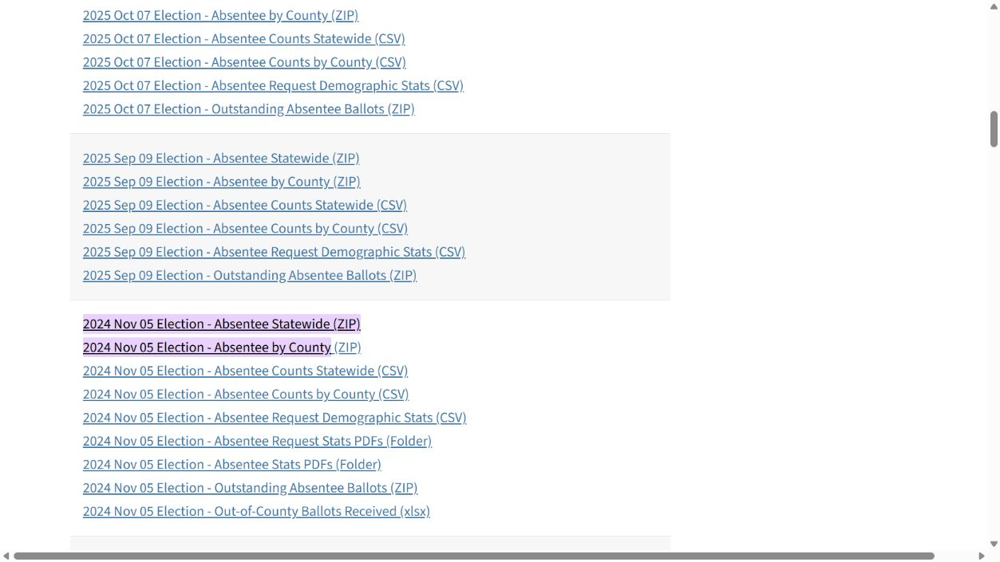

All ages · 2022
4,863
One accepted early-voting record at this site within the date window.
389 + 441 + 342 + 313 + 426 + 445 + 503 + 481 + 611 + 476 + 436 = 4,863
Inputs: the daily breakdown below. Original official ZIP
SOURCE CHECK · OCTOBER 26, 2026
Click a highlighted number to see its arithmetic, underlying aggregate counts and original state download.
Separate recount: all 15 displayed figures match the report. All three original archive hashes match the saved source manifest.
| Site / year | All ages | Ages 18–24 | Ages 18–22 | 18–24 share | Same-day registration |
|---|---|---|---|---|---|
| Talley Student Union2022 · Midterm | 4,863 — verify All ages in 2022 | 1,259 — verify Ages 18–24 in 2022 | 970 — verify Ages 18–22 in 2022 | 25.9% — verify 18–24 share in 2022 | 204 — verify Same-day registration in 2022 |
| Talley Student Union2024 · Presidential | 12,990 — verify All ages in 2024 | 4,939 — verify Ages 18–24 in 2024 | 3,983 — verify Ages 18–22 in 2024 | 38.0% — verify 18–24 share in 2024 | 842 — verify Same-day registration in 2024 |
| Western Boulevard Business Services2026 · Midterm | 7,463 — verify All ages in 2026 | 1,866 — verify Ages 18–24 in 2026 | 1,448 — verify Ages 18–22 in 2026 | 25.0% — verify 18–24 share in 2026 | 297 — verify Same-day registration in 2026 |
First 11 early-voting days in each year. Same-day registrations include all ages. The age share is a share of site ballots, not a registered- or eligible-voter turnout rate. 2026 remains preliminary through October 25.
The midterm age mix is nearly unchanged: 25.9% in 2022 versus 25.0% in 2026, a −0.9 percentage-point change. The larger 2024 comparison spans a presidential election and a midterm. Neither comparison establishes the move’s causal effect.

OFFICIAL RECORDS → PROJECT CALCULATION
2022-10-20 through 2022-10-30 · first 11 early-voting days
On the official page, the browser highlights the election’s archive links. If highlights are unsupported, search the page for “2022 Nov”. It does not highlight our calculated totals there.
WAKE_absentee_20221108.csvTA - NCSU TALLEY STUDENT CENTER929aa047d71207270a4030a99ee472bc6b49d020ec818e9a2c38333f2cc8f11eThe hash identifies the downloaded snapshot; it is not an NCSBE digital signature. The 2026 live URL can change, so later downloads may produce different counts or hashes.
All ages · 2022
One accepted early-voting record at this site within the date window.
389 + 441 + 342 + 313 + 426 + 445 + 503 + 481 + 611 + 476 + 436 = 4,863
Inputs: the daily breakdown below. Original official ZIP
Ages 18–24 · 2022
Accepted site records with source age from 18 through 24, inclusive.
118 + 199 + 213 + 236 + 204 + 163 + 126 = 1,259
Inputs: the age breakdown below. Original official ZIP
Ages 18–22 · 2022
Accepted site records with source age from 18 through 22, inclusive.
118 + 199 + 213 + 236 + 204 = 970
Inputs: the age breakdown below. Original official ZIP
18–24 share · 2022
College-age ballots divided by all accepted ballots at this site, multiplied by 100.
1,259 ÷ 4,863 × 100 = 25.889369% → 25.9%
Inputs: the daily breakdown below. Original official ZIP
Same-day registration · 2022
Accepted site records with the source sdr field equal to Y or YES, across all ages.
9 + 14 + 5 + 10 + 20 + 16 + 33 + 28 + 35 + 11 + 23 = 204
Inputs: the daily breakdown below. Original official ZIP
| Date | All ages | 18–24 | 18–22 | Same-day registration |
|---|---|---|---|---|
| 2022-10-20 | 389 | 95 | 74 | 9 |
| 2022-10-21 | 441 | 106 | 90 | 14 |
| 2022-10-22 | 342 | 60 | 43 | 5 |
| 2022-10-23 | 313 | 75 | 59 | 10 |
| 2022-10-24 | 426 | 132 | 110 | 20 |
| 2022-10-25 | 445 | 152 | 120 | 16 |
| 2022-10-26 | 503 | 154 | 124 | 33 |
| 2022-10-27 | 481 | 136 | 98 | 28 |
| 2022-10-28 | 611 | 178 | 141 | 35 |
| 2022-10-29 | 476 | 81 | 50 | 11 |
| 2022-10-30 | 436 | 90 | 61 | 23 |
| Sum | 4,863 | 1,259 | 970 | 204 |
| Age | Ballots |
|---|---|
| 18 | 118 |
| 19 | 199 |
| 20 | 213 |
| 21 | 236 |
| 22 | 204 |
| 23 | 163 |
| 24 | 126 |
| 18–24 total | 1,259 |
| 18–22 subtotal | 970 |
OFFICIAL RECORDS → PROJECT CALCULATION
2024-10-17 through 2024-10-27 · first 11 early-voting days
On the official page, the browser highlights the election’s archive links. If highlights are unsupported, search the page for “2024 Nov”. It does not highlight our calculated totals there.
WAKE_absentee_20241105.csvTA - NCSU TALLEY STUDENT CENTER98791bda4aec6eb07d7816bcac5a0d79dd46391a39a0f0d4b71cd367b6b74a30The hash identifies the downloaded snapshot; it is not an NCSBE digital signature. The 2026 live URL can change, so later downloads may produce different counts or hashes.
All ages · 2024
One accepted early-voting record at this site within the date window.
1,308 + 1,399 + 978 + 667 + 1,319 + 1,372 + 1,457 + 1,418 + 1,465 + 917 + 690 = 12,990
Inputs: the daily breakdown below. Original official ZIP
Ages 18–24 · 2024
Accepted site records with source age from 18 through 24, inclusive.
559 + 894 + 1,006 + 912 + 612 + 481 + 475 = 4,939
Inputs: the age breakdown below. Original official ZIP
Ages 18–22 · 2024
Accepted site records with source age from 18 through 22, inclusive.
559 + 894 + 1,006 + 912 + 612 = 3,983
Inputs: the age breakdown below. Original official ZIP
18–24 share · 2024
College-age ballots divided by all accepted ballots at this site, multiplied by 100.
4,939 ÷ 12,990 × 100 = 38.021555% → 38.0%
Inputs: the daily breakdown below. Original official ZIP
Same-day registration · 2024
Accepted site records with the source sdr field equal to Y or YES, across all ages.
58 + 66 + 28 + 21 + 65 + 109 + 103 + 147 + 130 + 56 + 59 = 842
Inputs: the daily breakdown below. Original official ZIP
| Date | All ages | 18–24 | 18–22 | Same-day registration |
|---|---|---|---|---|
| 2024-10-17 | 1,308 | 464 | 374 | 58 |
| 2024-10-18 | 1,399 | 488 | 392 | 66 |
| 2024-10-19 | 978 | 269 | 206 | 28 |
| 2024-10-20 | 667 | 209 | 154 | 21 |
| 2024-10-21 | 1,319 | 493 | 407 | 65 |
| 2024-10-22 | 1,372 | 616 | 516 | 109 |
| 2024-10-23 | 1,457 | 609 | 511 | 103 |
| 2024-10-24 | 1,418 | 661 | 562 | 147 |
| 2024-10-25 | 1,465 | 578 | 478 | 130 |
| 2024-10-26 | 917 | 300 | 197 | 56 |
| 2024-10-27 | 690 | 252 | 186 | 59 |
| Sum | 12,990 | 4,939 | 3,983 | 842 |
| Age | Ballots |
|---|---|
| 18 | 559 |
| 19 | 894 |
| 20 | 1,006 |
| 21 | 912 |
| 22 | 612 |
| 23 | 481 |
| 24 | 475 |
| 18–24 total | 4,939 |
| 18–22 subtotal | 3,983 |
OFFICIAL RECORDS → PROJECT CALCULATION
2026-10-15 through 2026-10-25 · first 11 early-voting days
On the official page, the browser highlights the election’s archive links. If highlights are unsupported, search the page for “2026 Nov”. It does not highlight our calculated totals there.
WAKE_absentee_20261103.csvNCSU WESTERN BLVD BUSINESS SERVICES14ad25264718d9f5dfd99e2c4cd8617a711a4459e8fb45cb91dd69525fb185cfThe hash identifies the downloaded snapshot; it is not an NCSBE digital signature. The 2026 live URL can change, so later downloads may produce different counts or hashes.
All ages · 2026
One accepted early-voting record at this site within the date window.
831 + 803 + 467 + 398 + 684 + 725 + 734 + 729 + 1,004 + 571 + 517 = 7,463
Inputs: the daily breakdown below. Original official ZIP
Ages 18–24 · 2026
Accepted site records with source age from 18 through 24, inclusive.
150 + 280 + 359 + 374 + 285 + 223 + 195 = 1,866
Inputs: the age breakdown below. Original official ZIP
Ages 18–22 · 2026
Accepted site records with source age from 18 through 22, inclusive.
150 + 280 + 359 + 374 + 285 = 1,448
Inputs: the age breakdown below. Original official ZIP
18–24 share · 2026
College-age ballots divided by all accepted ballots at this site, multiplied by 100.
1,866 ÷ 7,463 × 100 = 25.003350% → 25.0%
Inputs: the daily breakdown below. Original official ZIP
Same-day registration · 2026
Accepted site records with the source sdr field equal to Y or YES, across all ages.
29 + 12 + 10 + 12 + 22 + 22 + 44 + 36 + 48 + 29 + 33 = 297
Inputs: the daily breakdown below. Original official ZIP
| Date | All ages | 18–24 | 18–22 | Same-day registration |
|---|---|---|---|---|
| 2026-10-15 | 831 | 155 | 124 | 29 |
| 2026-10-16 | 803 | 152 | 115 | 12 |
| 2026-10-17 | 467 | 73 | 47 | 10 |
| 2026-10-18 | 398 | 68 | 49 | 12 |
| 2026-10-19 | 684 | 129 | 90 | 22 |
| 2026-10-20 | 725 | 190 | 160 | 22 |
| 2026-10-21 | 734 | 229 | 177 | 44 |
| 2026-10-22 | 729 | 251 | 202 | 36 |
| 2026-10-23 | 1,004 | 338 | 277 | 48 |
| 2026-10-24 | 571 | 140 | 93 | 29 |
| 2026-10-25 | 517 | 141 | 114 | 33 |
| Sum | 7,463 | 1,866 | 1,448 | 297 |
| Age | Ballots |
|---|---|
| 18 | 150 |
| 19 | 280 |
| 20 | 359 |
| 21 | 374 |
| 22 | 285 |
| 23 | 223 |
| 24 | 195 |
| 18–24 total | 1,866 |
| 18–22 subtotal | 1,448 |